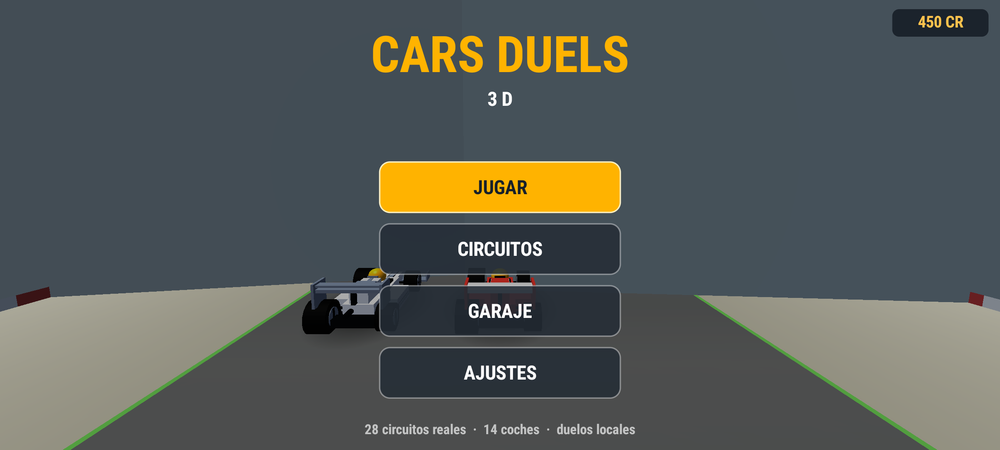
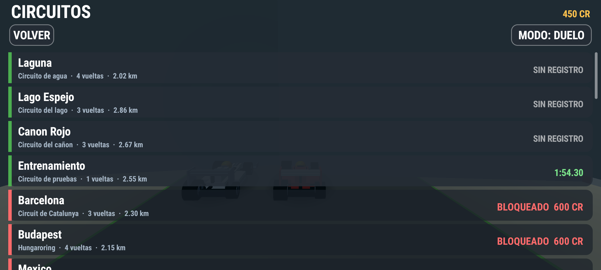
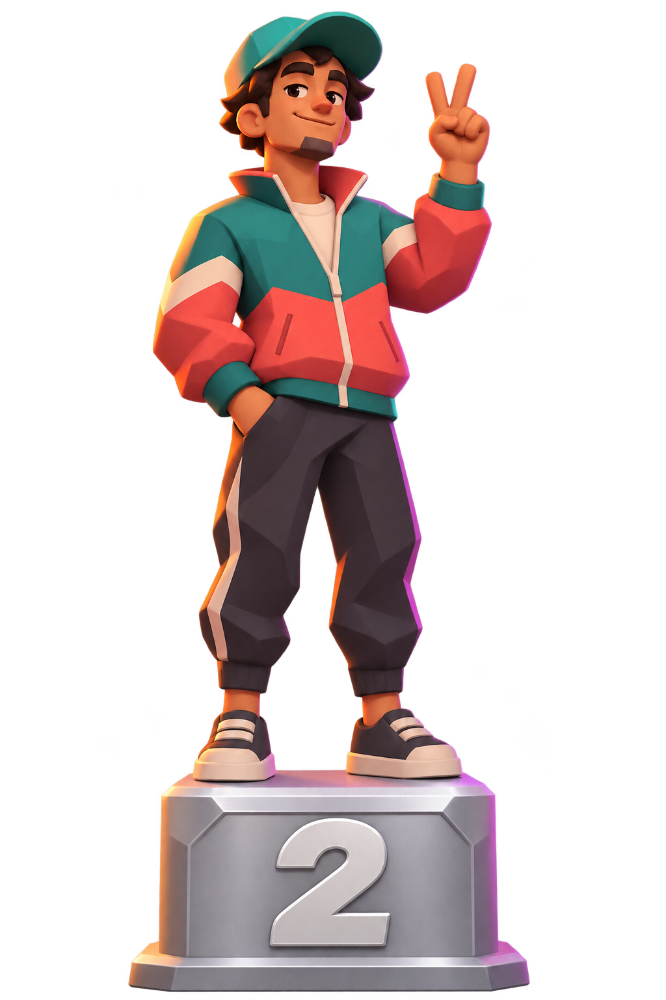
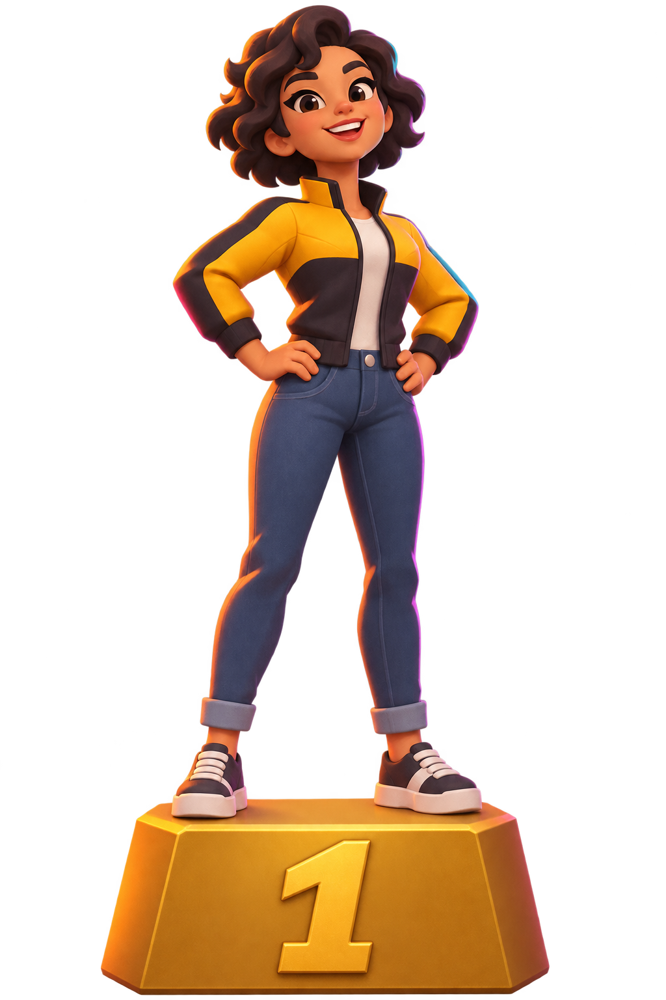
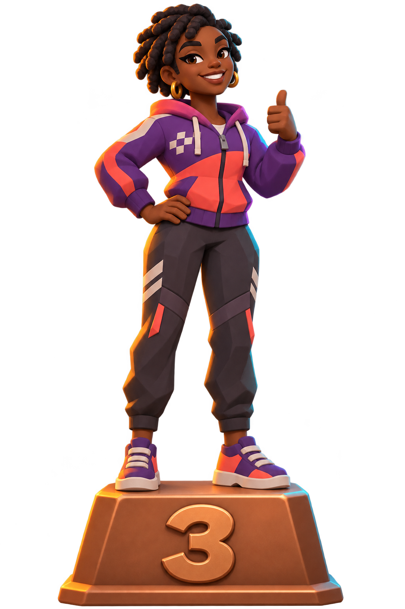
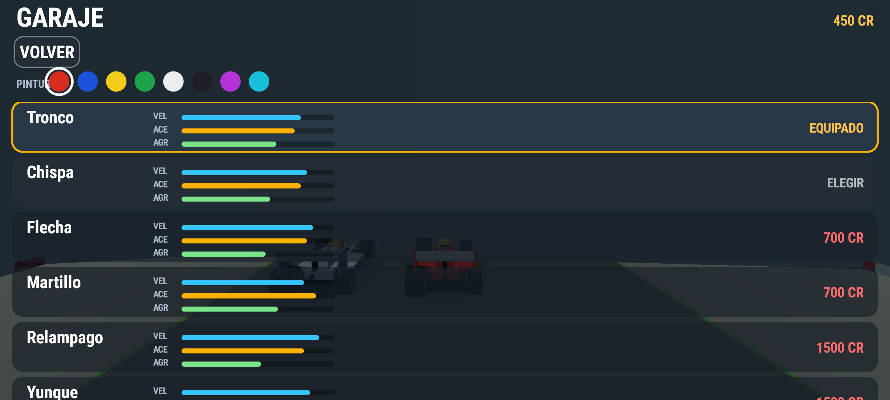

Gánale a la parrilla
Compite en carreras locales contra cuatro rivales controlados por el juego. Encuentra espacio, adelanta y cruza primero.
CARRERAS ARCADE · ANDROID
Elige tu coche, encuentra tu trazada y ve por ese tiempo que todavía puedes bajar.

Tu ritmo, tu carrera
Entra a una carrera directa o busca la vuelta perfecta. Cada pista te pide una decisión distinta.
Compite en carreras locales contra cuatro rivales controlados por el juego. Encuentra espacio, adelanta y cruza primero.
Recorre el circuito a tu ritmo, registra tus tiempos y vuelve a intentarlo para mejorar cada sector.
La vuelta empieza aquí
De la costa a las curvas de montaña: recorre 28 trazados con ambientes distintos, curvas enlazadas y rectas para preparar el adelantamiento.

La vuelta de la semana
Una muestra animada de clasificación, con pilotos ficticios y tiempos aleatorios para darle vida a la parrilla.



Demo visual · nombres y tiempos aleatorios · no representa resultados en vivo.

Tu coche, tu manera
Prueba distintas combinaciones de velocidad, aceleración y agarre. Desbloquea coches, gana créditos en la pista y ajusta su pintura en el garaje.
Las estadísticas varían según el coche.
Hecho para volver a correr
Cars Duels 3D es una experiencia de carreras arcade para Android, construida por AstroSeec.
El juego funciona sin conexión y las carreras se disputan localmente contra rivales del juego.
Gana créditos corriendo, desbloquea circuitos y coches, y guarda tus mejores tiempos.
Vuelve al circuito, prueba otro coche y busca una línea más limpia en cada curva.